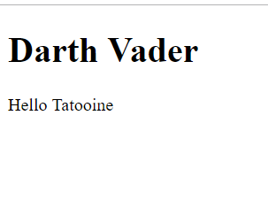
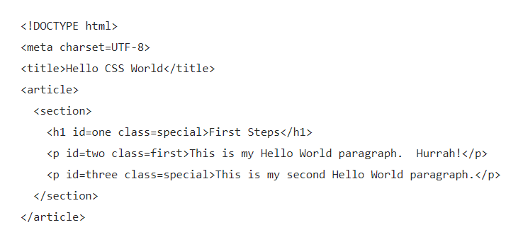
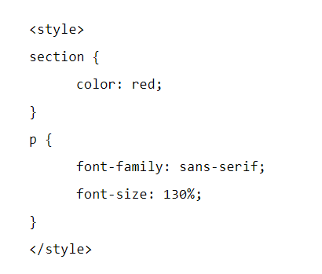
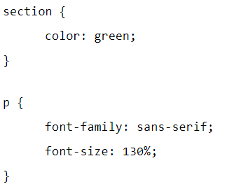
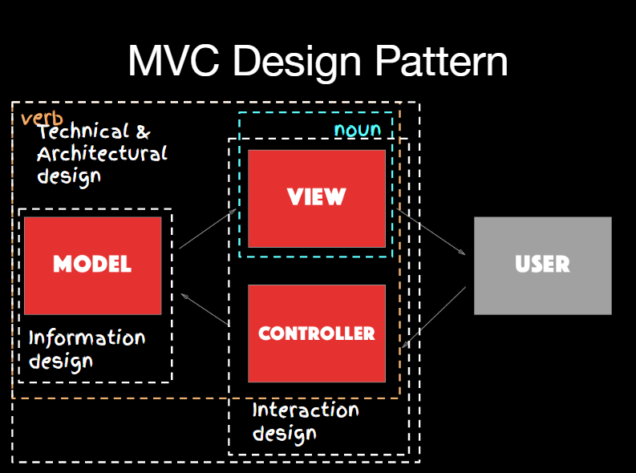
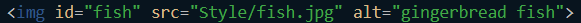
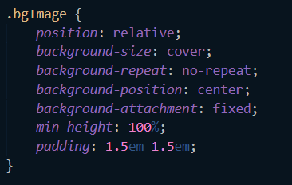
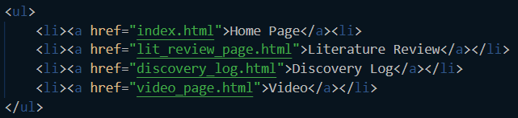
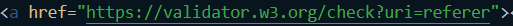

To return to the top of the page, click the week titles.
Discovery Log Page
Week 1 - 28/09/18
For the Website awards task I struggled finding a poor website example, as we generally don’t use poor websites, if we notice problems with a site, we stop using it and forget about it fairly quickly.
I also struggled coming up with ideas for a new/improved website (utopia) because most of my ideas were based on sites I already use, and the reason I use them is that they are the best of their kind that I know of.
Week 2 - 5/10/18
This weeks task is to consider Web Security and how information about you is captured, shared and secured on a daily bases. Part of this task is to produce a strategy that a social media site could adopt to secure the information they hold.
The following is a bullet-pointed list of the types of data produced daily by a typical person:
Automatically Collected Data: (Most of this is sensitive information that needs to be protected and not publicly available without the consent of the user) IP Addresses Location Information (secret, sensitive, public) Location Information is dependant on the security settings of the user. This information is highly sensitive and should not be shared publicly without the consent of the user from which it is taken. Can be spoofed. Cookies from other websites (Search History) (secret) Taken from a browser, shows stored information snippets from other sites. Cookies are confidential and are sensitive because it can give information on previous sites and even some passwords. Friend information (public) Depends on the privacy setting of the user this can range from public information to highly sensitive information. Browser information Highly sensitive Search Trends (secret) Previously Opened applications View time Previously viewed posts Other linked Social Media accounts (i.e. Facebook with Instagram)
Manually Created Data: Usernames (Sensitive depending on the purpose of the account) Passwords (Secret) Email Addresses (Public) Social Posts (Public) No Integrity checks due to freedom of information, other countries may be different. Social media likes (sensitive/public) Depends on the content being liked and how the user feels about it Personalised adverts (Application of the collected data) Personalised news posts (Application of the collected data) Shared Posts (Public/Private) Transactional data (secret) Private Messages Marketplace posts Looked at posts Photos Including people “tagged”
The following are some examples of how a new social media site could utilize this information: How would a new social media website apply this information: Location and friend information can be used to make social profiles on the users of the website for targeting promoted posts and adverts Using security details/options to give the user control over what information can be viewed and by whom. This can also be applied to an advanced options page which allows users with more technical knowledge to be more specific (altering search trend options or if the website is allowed to track the user's information/search history).
Week 3 - 12/10/18
This week we are starting research for our literature review on Mitigating personal information exposure on the web.
The following are search words I used to find some information on the topic: Personal online security Social media security risks CyberSecurity Privacy and security Unwilling exposure
Core topical themes: Social Networks, Cybersecurity, Phishing techniques, Privacy.
Week 4 - 19/10/18
Better Writing This week is based on how to improve writing technique. The following are different examples with accompanying improvements that could be made. (The text in red are the improvements made).
Replacing Phrasal Verbs With Cues E.g. “When children are growing up...” may be more succinctly written, “As children mature…”
A receipt was given back. - A receipt was returned. They have been looking into the issue for decades. - They have been investigating the issue for decades. Cyber-attack likelihood can go up and down. - Cyber-attack likelihood can fluctuate. This problem was brought up during the lecture. - The Problem was discussed during the lecture. Citizens assume the government will step in to control cybersecurity. - Citizens assume the government will intervene to control cybersecurity. The risk has been cut down recently. - The risk has been reduced recently. It was hard to find out information about phishing. - There was difficulty in finding information regarding phishing. We cannot altogether get rid of the problem of risk. - We cannot altogether eliminate the problem of risk. The same solution was put forward by three research groups. - The some solution was proposed by three research groups.
Replacing Phrasal Verbs Without Cues The decision was put off until next month. The decision was postponed until the following month. The university is thinking up a new data retention policy.- The university is imagining a new data retention policy. Citizens refused to put up with the poor service. Citizens refused to accept the poor service. The downturn was brought about by globalization. - The Downturn was induced by globalization. She went on hacking for several hours. - She continued hacking for several hour. Paper use has been cut down in many offices during the 21st century. - Paper has decreased in many offices during the 21st century.
Choosing Appropriate Adjectives/Expressions (Some adjectives are more appropriate.) Researchers have made considerable/great progress in understanding the problem. - considerable We got/obtained preliminary results from the black box. - obtained The results from some/numerous experiments will be summarised. - numerous Loss of privacy is a consequence/thing that can happen when posting photos online. - consequence In academic writing, appropriate sources are really important/paramount. - paramount Some ideas bubbling out of our thought percolator/arising from our research are covered in that paper. - arising from our research
Choose Formal Words And Phrases Researchers are holding a get together to chat about their funding bid. - Researchers are having a meeting to discuss their funding bid. The resulting scientific advances are nice. - The resulting scientific advances are excellent. The professor reacted kinda badly. - The professor reacted appallingly. Should such an event occur then something’s gonna hit the fan. - Should such an event occur, there will be dire consequences. Examination results be like Everest with a cherry on top!!!1!!eleven!!! - Examination results peaked after the most recent tests.
Contraction Alternatives We'll double check the lab machines. - We will double check the lab machines. We wonder who’ll be the most appropriate candidate. - we wonder who will be the most appropriate candidate. Yes, it's rocket science. - Yes, it is rocket science. What’s the average airspeed of a swallow? - What is the average airspeed of a swallow? The figures weren't reliable. - The figures were not reliable.
Avoiding Personal and Subjective Writing In this report, I will highlight the key differences between Enterprise and Web architectures. - This report highlights the key differences between Enterprise and Web architectures. In the web app, we will make more options available. - The web app will include more options. I have structured my report as follows. - The report has been structured as follows. You can apply the same algorithm to number sorting. - The same algorithm can be applied to number sorting. In the opinion of this author, understanding algorithms is critical to good software design. - Understanding algorithms is vital to good software design. This data is correct but you should check if it has been updated. - The data should be checked regularly to see if any updates can be applied. You’re only allowed to be logged in as one user at a time. - Only one user can be logged in at a time.
Exercise Caution Cyberattacks will increase in size and result in global havoc. - Cyberattacks may increase in size and result in increased global havoc. Nowadays everyone uses Google Chrome and IE is dead. - Google Chrome has seen a increase in popularity, while Internet Explorer has seen a decrease in use in recent times. Working all night to complete a coursework is bad for your health. - Working all night to complete coursework could be bad for your health.
Accurate Formal Writing I think there’s huge benefits to using the web over enterprise tech. - Research suggests that there are a number of benefits of using the web compared to using Enterprise Technology. Survey respondents must fill in loads of forms. - Survey respondents are required to fill in a significant amount of forms. We tried thinking about the data a bit to see if it made much sense, and that was when we saw the pattern which is the main thing this paper about. - Whilst assessing the data, a pattern appeared which was outlined in the paper as a whole. Everyone knows the average number of legs for grown up people is two. - The average human being is born with two legs.
Week 5 - 26/10/18
We are creating our first web pages this week and uploading it to our VM’s. Using HTML we’ve set up a website titled index (this is what most main pages are named). We are just using provided examples to fill the HTML this week (although we can adjust it). This week we’ve used: doctype - Which states what type of HTML we are using. title - This is just the tag used for the title. H1 - This is a heading tag. P - This is a paragraph tag. One reason we use these tags is for readability, it makes it easier to understand the HTML knowing what each bit of text is being used for. It also makes it easier to apply CSS to specific parts of your code.
To upload the web page to our VM’s we had to start the VM then take the IP address and use SCP software. We then placed it into a folder in our VM named “me”. We then used a secure shell to run the web server, which provided multiple IP addresses, but we didn't need to use these. We then put the original IP address into the address bar of a browser which showed us the website we had built. The following image is the output of the HTML we used.
Week 6 - Reading week
During this week I played with HTML trying to understand what the different tags did and why they are important. p - The p tag is used for paragraphs of text. h1 - This is used for headers. The 1 can be changed to any number to show which header it applies to. body - This shows what the body of the website is going be, so the majority, if not all, of your HTML should be within this. img - The img tag is used for showing images/pictures on your website. This requires a src code (source code) for where the image is coming from. Any images used on the site need to be kept in a file with the rest of the HTML or they will not be able to access it. section - This tag is used to outline a generic section in the document/code you are writing. All of these tags are used in different ways, but you can apply CSS to any and all of them. For example, using CSS on the “body” of the code, you will apply that CSS to everything within the body. But if you wanted to change specific parts, like the headers, then you could just apply it to “h1”.
Week 7 - 09/11/18
HTML- Starting webpage The following code creates a webpage with 3 lines of text. The first says “First Steps” in bold. The second line says “This is my Hello World Paragraph. Hurrah!”, the third line says “This is my second Hello World paragraph”. These are contained within article and section tags.
The following code changes the text to red, it also changes the font size and style. This is written in the HTML using a style tag. This is an efficient way of styling your website though because you can use CSS (Cascading Style Sheets) to style your website.
You can also link in style sheets from other created files. So if you create a file with the following code:
Then implement this in your web-page file just below the title element(tag): <link rel="stylesheet" title="My Style" href="mystyle.css">. This will then apply the code found in the corresponding file (in this case, change the text within section green, a different font style, and increase the font size by 130%)
Week 8 - 16/11/18
This week we are looking at editors and their different uses within them. For example, I use Visual Studio Code for my software. Using the Command Palette (ctrl + shift + P), it gives me a list of all available commands, then when you type in any text it condenses the suggestions to ones that correspond to your search. For example, typing “indent” will give you a list of all the indent commands.
I also explored the other settings/themes VS Code has to offer. There are different settings that help the user code like auto indentation (which the editor then decides when typing, pasting or moving lines whether to indent them), line numbers, which tell you the number of lines of code you have, and soft wrap which reduces the size of the lines to the size of your screen (if disabled the text just runs along the line its written on, producing a scroll bar).
There are also different themes you can choose from, which is helpful because having a darker coloured theme/background is less stress on your eyes.
Week 9 - 23/11/18
This week’s work is based on design. During the lecture, we were shown examples of poorly designed items/products/websites. These examples included a hob design that showed little to no detail of which hob heats from which dial. This is a example of poor architectural design.
A useful and common design pattern is the MVC design pattern. The Model View Controller design pattern is a useful way for us to analyse a design or separating the design process. The image below shows the MVC design pattern and how it separates the interaction design from the information design.
The information design (model) is the content of your site, the information it provides. This is arguably the most important part because, without it, there would be no reason to make the site. The information held within must be appropriate to the intended audience, for example, recipes on a cooking website.
The interaction design holds the view and controller of the website. The view is the design view of the website, which includes but is not limited too: the page layout, the colours used if dynamic elements (like drop-down menus) will be used. The controller part includes: navigational tools (the menus, for example, are easier to use if they remain in the same place on each page), consistency of colours, structures, spacing etc, and sometimes the need of a search bar.
Week 10/11 - 30/11/18-7/12/18
During week 10 we have been viewing how to include images into HTML. This is done by using an img tag, including a src and alt attributes. I tried out using img tags for my home page but I kept running into an issue with the src attribute. Because I wasn’t detailing which folder I had put the image into, so the src attribute didn’t know where to look to find the image. After I changed the code to detail the file name as well (“Style/fish.jpg”), the image appeared.
By applying id tags to the different images, I was able to make specific changes to each of them individually using CSS. This was very useful because each image used needed different sizing and resolution adjustments.
There are issues if you try to apply width and height code simultaneously because it is conflicting code and stretches it making it unusable (if the code isn’t written correctly). A better way of doing it is to just apply the code to either height or width, which then changes the the overall size of the image.
Week 12 - 14/12/18
During this week I continued to develop my website, learning how to make change backgrounds to images and keep them fixed in place, without making multiple copies of the background appear as you scroll. The code I used for this is displayed below. position: relative; keeps the image relative to its original position as the background. background-size: cover; makes the image cover the entire section, stretching it if needed. background-repeat: no-repeat; changes the code so that the background doesn't produce multiple of the background image as you scroll. background-position: center; allows the background to stay centered within the section, rather than having off to one side. background-attachment: fixed; keeps the background fixed in place so that when scrolling, the image stays stationary in the background. min-height: 100%; this is used to keep the background height at least 100% of its original height (so that it doesn't try to shrink the image) padding: 1.5em 1.5em; this is to keep anything within the section from getting to close to the edge of the screen
Week 13 - 24/01/19
This week we learned about web addressing and lists. There are different types of list tags you can use. “ul” is the tag used for an unordered list. When used in HTML it renders this as bullet points (unless you change this in your CSS). Within this tag you use “li” tags (list item tags) to surround each item in your list. They also require an “a” element with a href link, which defines a hyperlink. The href should be the name of the page/document you want the link to follow. Below is the code used for my website linking the different pages together.
Week 14 - 31/1/19
During this week we started learning and using validation to make sure our website has no major errors in the code. We did this by using the website “validator.w3.org”, uploading the file (or using the hosted url to it) which then went through our code and found any errors. This tool was invaluable, because it showed you all your errors, why it is an error and how to fix the problem. When I first ran my code through it it showed I had several issues with some of my tags, including a few a p tags not being closed (affecting the following text). Fortunately all of my issues were simple to fix and I didnt have any major errors breaking my code. The following code also takes you straight to the validator site, and automatically validates the page you clicked this link on.
There is also a CSS validator link at “jigsaw.w3.org/css-validator” that goes through the CSS code and does the same thing. Fortunately I didn’t have any issues with my CSS, but I continued to check it as I developed further, incase I did make any errors.
Week 15 - 7/2/19
We looked at standardization this week. I hadn’t actually realised how much we use standardisation daily, but it makes sense because you need to have standards for almost everything. There are different organization and institution that deal with internet standards. For example there is ISO (International Organization for Standardization) and BSI (British Standards Institute).
There are standards within HTML and CSS for example that form the framework for the languages. The standardization of a language outlines what everything within the language does, from each individual element to general syntax usage.
Standardization is very important because with standards you also gain stability. For example, everyone writing using the same HTML specifications, makes it easier to understand the language, and to use it. If everyone used a different format of HTML, all with their own differences (head meaning navigation for example) then we would have constant misunderstandings.
Week 16 - 14/2/19
This week we focused on usability. Usability is essential in design, because if a user struggles to use/navigate/work with a website, they are a lot less likely to actually use it. Having poor UI (User Interface) designs can cause all sorts of problems. For example, if you have a poor UI design on an airplane, and a user is unable to interpret what an error message means, then it can have dire consequences. Although this is a drastic example, it does underline how important usability is.
Some usability concerns I have had with my website are based around navigating through my websites, and how the website will react to being used on a phone. I looked into how my nav bar works and how it maintains it position. I decided to keep the navbar along the top of the screen, in the same position for each page. This will ensure the users know where and how to move around the pages.
I considered error messages for my site, but there are few places on my site that would require one. I have, however, added attributes to my images and videos, incase they cannot be displayed. These will tell the user what was supposed to be in that specific place. In our practical we drew out the design of our websites and then looked up the usability standards in pairs. We then checked each others designs to see if there were any problems with the possible usability of our designs. Fortunately, neither of us could find any issues with our designs.